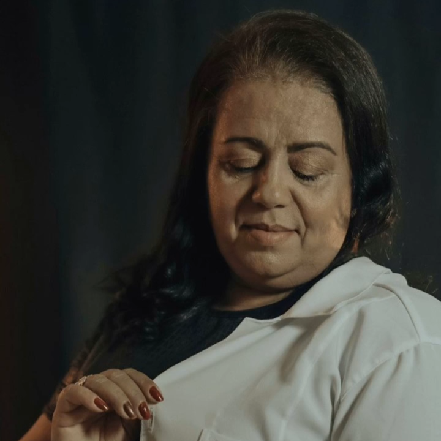
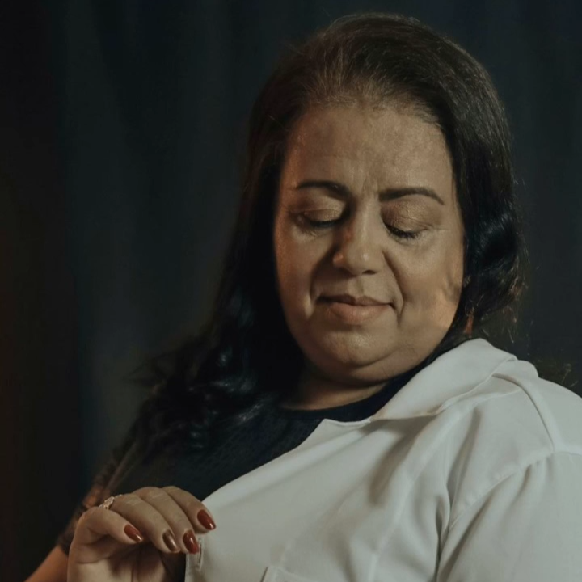

Conheça minha formação
Minha trajetória na Psicologia Clínica
Desde muito jovem, senti o desejo de compreender o ser humano em sua essência — emoções, dores, histórias e transformações. A Psicologia não foi apenas uma escolha profissional, mas um chamado. Hoje, atuo como psicóloga clínica especializada em Terapia Cognitivo-Comportamental (TCC), unindo acolhimento, técnica e estratégias práticas para promover saúde mental e equilíbrio emocional.
Formação e especialização
Sou formada em Psicologia e possuo registro profissional ativo no Conselho Regional de Psicologia (CRP). Minha especialização em Terapia Cognitivo-Comportamental me permite auxiliar pessoas na identificação e transformação de padrões de pensamento e comportamento que geram sofrimento.
Ao longo da minha trajetória, ampliei constantemente meu repertório técnico e científico. Realizei capacitações de destaque na Escola Nacional de Administração Pública (ENAP), com foco em Avaliação de Impacto de Programas e Políticas Sociais e Inovação Social para o Aperfeiçoamento de Políticas Públicas, conhecimentos que fortalecem minha visão crítica e estruturada sobre intervenções sociais e sua efetividade.
Também possuo formação acadêmica em Linguística, Ortografia e Gramática, aprimorando minha comunicação terapêutica e didática. Me dedico a estudos voltados ao desenvolvimento humano e familiar, como Criando Filhos à Luz das Escrituras e As Linguagens e Formas Corretas de Expressar o Amor, além de participação em seminários sobre inclusão social e envelhecimento, como o Desafios da Longevidade: Inclusão, Fonte de Protagonismo.
Formações complementares na área da Psicologia
- Patopsicologia – estudo das alterações cognitivas, emocionais e comportamentais associadas a transtornos mentais
- Linguística aplicada – aprimoramento da comunicação terapêutica e da escuta qualificada
- Educação Ambiental – integração entre saúde mental, qualidade de vida e bem-estar
- Desenvolvimento familiar – cursos voltados para comunicação afetiva e educação de filhos
- Inclusão social e envelhecimento – abordagens para acolhimento e protagonismo de diferentes grupos sociais
Como a TCC pode transformar vidas
A Terapia Cognitivo-Comportamental é uma abordagem científica e prática que ajuda o paciente a compreender a relação entre pensamentos, emoções e comportamentos. Por meio dela, é possível desenvolver novas habilidades emocionais, lidar melhor com desafios e construir uma vida mais leve e consciente.
Experiência de atendimento
Atendo adultos e adolescentes tanto presencialmente quanto em terapia online, oferecendo um espaço seguro, com escuta qualificada, acolhimento e estratégias personalizadas para cada história de vida. Meu propósito é caminhar ao lado dos meus pacientes em seus processos de autoconhecimento, transformação e cura emocional, aplicando não apenas técnicas terapêuticas, mas também conhecimentos adquiridos em diversas áreas interligadas à saúde mental, bem-estar e desenvolvimento humano.
Agende sua sessão e dê o primeiro passo para cuidar da sua saúde mental com segurança, acolhimento e profissionalismo. Voltar para a página principal